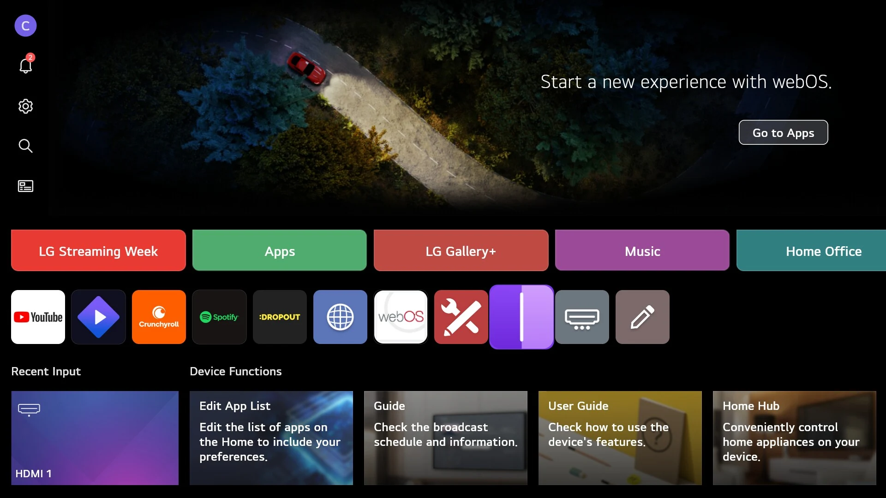
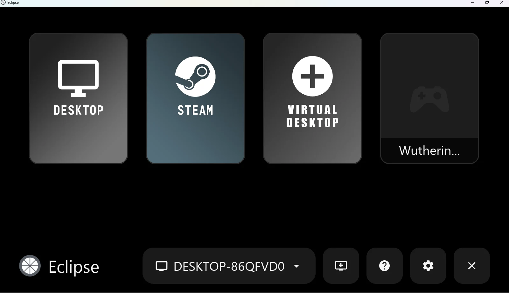
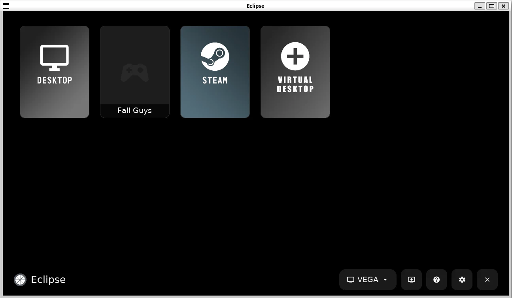
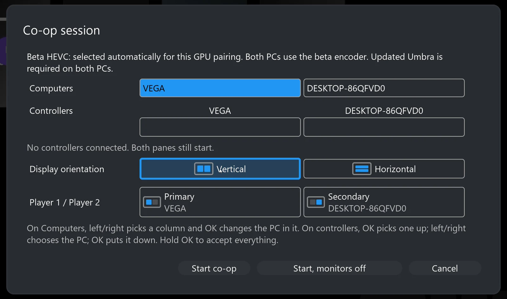

Gaming PC → Umbra
Windows x64 or Linux host. Install once for ordinary streaming, or on two PCs for co-op. On Linux, co-op needs KDE Plasma or GNOME on Wayland. The game runs here. Already using Vibepollo? Umbra (Vibepollo) keeps your settings.
Installation Guide
Install Umbra on each gaming PC, then Eclipse on the display device. Start with one working stream before adding the second host.
Windows x64 or Linux host. Install once for ordinary streaming, or on two PCs for co-op. On Linux, co-op needs KDE Plasma or GNOME on Wayland. The game runs here. Already using Vibepollo? Umbra (Vibepollo) keeps your settings.
LG webOS, Windows x64, Linux x86_64 or Android TV (including NVIDIA SHIELD) client. Install the package matching the device where you will view and control the stream.
Download an attached file under Assets, not GitHub’s automatically generated Source code (zip) or Source code (tar.gz). Those are developer archives, not installable apps. Use the latest compatible stable release. If no package is attached for your platform, that download is not available.
Pairing · First co-op session · Troubleshooting and logs · Tested hardware

Open the latest release, expand Assets and choose the package described below. If no release is listed, that package has not been published.
Using Vibepollo? Install Umbra (Vibepollo) instead; it keeps your Vibepollo settings. These steps describe the Apollo-based Umbra.
Package: the Windows x64 installer Umbra-windows-x64.exe attached to an Umbra release, not an Eclipse client ZIP. You need a Windows gaming PC, a supported GPU and current driver, administrator access for installation, and the games you intend to run already installed. Windows 11 x64 is the tested host OS.
Get-FileHash in PowerShell before opening it.reg.exe in Task Manager (Details tab) and setup continues.For co-op, install the same compatible Umbra release on the second Windows PC. Co-op-specific defaults are separate from ordinary streaming settings. The Co-op Pane is built in and requested automatically by Eclipse, rather than created in the host’s editable Applications list. You should not create application entries, copy host IDs or tune encoder settings by hand.
Open the latest release, expand Assets and choose the package described below. If no release is listed, that package has not been published.
Package: the Windows x64 installer Umbra-Vibepollo-windows-x64.exe attached to the latest Umbra (Vibepollo) release. It is built on Vibepollo instead of Apollo and carries the same additions for Eclipse; compare the two versions.
Get-FileHash in PowerShell before opening it. It is unsigned for now, so Windows SmartScreen may warn; check the hash, then choose More info → Run anyway.Open the Umbra for Linux release and expand Assets. If no release is listed, that package has not been published.
Package: Umbra-<version>-linux-x86_64.flatpak, one Flatpak bundle for x86_64 Linux. You need KDE Plasma or GNOME on Wayland (an X11 desktop gives ordinary streaming only), an NVIDIA or AMD GPU with its current driver, and the games you intend to run already installed. It has been tested on Ubuntu 26.04 with KDE Plasma and with GNOME, on an NVIDIA RTX 2060 SUPER and an AMD Radeon RX Vega.
If you installed the earlier Ubuntu .deb (Umbra 0.5.0), remove it first with systemctl --user disable --now sunshine and sudo apt remove umbra. The Flatpak keeps its own settings, so pair Eclipse with it again.
sudo apt install flatpak
flatpak remote-add --user --if-not-exists flathub https://dl.flathub.org/repo/flathub.flatpakrepo.flatpak and its .sha256 from the release’s Assets into one folder, check it and install it:sha256sum -c Umbra-<version>-linux-x86_64.flatpak.sha256
flatpak install --user Umbra-<version>-linux-x86_64.flatpakhttps://localhost:47990 in a browser on that PC, create the local administrator login and review the game/desktop entries. If a firewall is enabled, allow the host on your trusted private network.| Desktop | Streaming | Own virtual display per stream | Co-op | HDR |
|---|---|---|---|---|
| KDE Plasma on Wayland (tested: Ubuntu 26.04, KWin 6.6.6) | Yes | Yes | Yes | With the KDE HDR extra |
| GNOME on Wayland (tested: Ubuntu 26.04, Mutter 50.1) | Yes | Yes | Yes | With the GNOME HDR extra; a physical HDR monitor streams HDR without it |
| X11 desktops (Cinnamon, Xfce, MATE …) | Yes (tested during development on Linux Mint 22.3) | No | No | No |
| Sway, Hyprland and other wlroots desktops, COSMIC | Not supported | |||
Other distributions running KDE Plasma or GNOME on Wayland are expected to behave like those rows but have not been tested. An X11 desktop has no way to create a display while it runs, so there the host streams the desktop but never offers co-op or HDR.
GPUs. NVIDIA (tested: RTX 2060 SUPER, driver 595) and AMD (tested: Radeon RX Vega) both encode on the GPU. The only AMD card available for testing is a Radeon RX Vega from 2017: its video encoder reaches about 60 fps at 4K and 165 fps only at 1080p, its co-op panes run at about 35 fps, and it has no 10-bit encoder, so its ordinary streams are SDR. The same card hit the same 4K limit on Windows (62 fps), so its age, not Umbra, is the likely limit; newer AMD cards could not be tested. Intel GPUs and PCs with more than one GPU are untested.
Co-op. A Linux host and a Windows host can share one co-op session (tested with Umbra 0.5.0 on Windows). Two Linux hosts together are untested.
Stock KWin and Mutter keep the virtual displays Umbra streams SDR. Two optional extras add HDR virtual displays and 10-bit screen capture: a small patch to KWin 6.6.6 for KDE Plasma and one to Mutter 50.1 for GNOME. Umbra detects them by itself. Like the Flatpak, they were tested on Ubuntu 26.04, which ships those versions. Both patches apply unchanged to KDE’s and GNOME’s own 6.6.6 and 50.1 releases, so other distributions shipping KWin 6.6.6 or Mutter 50.1 are expected to work but are untested. Other KWin or Mutter versions need the patch adapted.
kwin_wayland --version must print kwin 6.6.6 (KDE Plasma), or gnome-shell --version must print GNOME Shell 50.1 (GNOME, which runs on Mutter 50.1).Umbra-HDR-KDE-ubuntu26.04.tar.gz and Umbra-HDR-GNOME-ubuntu26.04.tar.gz, built from Ubuntu’s own kwin and mutter packages. Download the one for your desktop, unpack it, check it and install it (KDE shown; the GNOME one is the same with GNOME in its name):tar -xzf Umbra-HDR-KDE-ubuntu26.04.tar.gz
cd Umbra-HDR-KDE-ubuntu26.04
sha256sum -c SHA256SUMS
sudo dpkg -i *.debkwin or mutter package, rebuild that package with its usual tools and install it.flatpak kill io.github.PreceptorOfMagic.Umbra
rm -f ~/.var/app/io.github.PreceptorOfMagic.Umbra/config/sunshine/*_virtual_hdrcurl -s http://localhost:47989/serverinfo | grep -o '<UmbraCoopHdr>[01]' prints <UmbraCoopHdr>1. Then turn HDR on for this host in Eclipse.The extras replace your desktop’s compositor packages. A distribution update of KWin or Mutter replaces them again and streams return to SDR; do not reinstall a patched build over a newer version. To undo an extra, reinstall your distribution’s own package; for the Ubuntu packages, each extra’s README.txt has the one-line rollback. The patches and the Ubuntu source packages are published with the release.
To remove Umbra, run flatpak run --command=remove-additional-install.sh io.github.PreceptorOfMagic.Umbra to remove the input rule and sign-in start, then flatpak uninstall --user io.github.PreceptorOfMagic.Umbra.

Open the latest release, expand Assets and choose the package described below. If no release is listed, that package has not been published.
Package: the standard com.aurora.gamestream_<version>_arm.ipk asset. The inherited package ID is intentional; do not choose a separate beta-app package. You need a supported LG webOS TV, an LG Developer account, a computer and a shared network. Current physical coverage is the LG G5 on webOS 26.
.ipk asset to the computer. In Dev Manager, select the TV, open Apps, choose Install and select that file..ipk the same way; settings and pairings are kept. After an update, close and reopen Eclipse.Keep Developer Mode active and extend its session before it expires. LG removes development-installed apps when Developer Mode is disabled. This installation method does not require rooting your TV.

Open the latest release, expand Assets and choose the package described below. If no release is listed, that package has not been published.
Package: the installer eclipse-windows-x64-setup-unsigned.exe, or the portable eclipse-windows-x64-unsigned.zip, each with its adjacent .sha256 file. Windows 11 x64 is tested; the source minimum is Windows 10 version 1803, which has not received the same physical testing. An up-to-date GPU driver with compatible D3D11VA hardware decoding is required. Windows ARM is not a tested target.
Get-FileHash ./eclipse-windows-x64-setup-unsigned.exe -Algorithm SHA256 and compare the hash with the downloaded checksum.moonlight-tv.exe from it. The inherited executable name is expected. Do not run the app from inside the ZIP or move its executable away from the supplied DLLs, data and notices.
./eclipse, with a paired PC’s apps.Open the latest release, expand Assets and choose the package described below. If no release is listed, that package has not been published.
Package: eclipse-linux-x86_64.tar.gz. Use an x86_64 Linux desktop with glibc 2.35 or newer (Ubuntu 22.04 baseline), a graphical session and working GPU drivers. Bundled application libraries do not replace your graphics driver. Current testing is in WSL Linux environments, not broad native-Linux certification.
sha256sum eclipse-linux-x86_64.tar.gz with that checksum.tar -xzf eclipse-linux-x86_64.tar.gz
cd eclipse-linux-x86_64
./install.shinstall.sh installs Eclipse for your user, without a password, and adds it to the applications menu; the downloaded folder can then be deleted. Installing a newer version the same way keeps your settings and pairings../eclipse from the extracted folder and keep the folder together; ./install-desktop-entry.sh adds that copy to the menu. Then pair the host. To remove an installed copy, run ~/.local/share/eclipse/app/uninstall.sh (add --keep-settings to keep your settings and pairings).Use the portable archive instructions for Ubuntu, Fedora and Arch-style systems meeting these requirements. Do not substitute an ARM package or assume a source archive is a distro installer.
Open the latest release, expand Assets and choose the package described below. If no release is listed, that package has not been published.
Package: eclipse-android.apk with its adjacent .sha256 file. One APK covers every supported device. You need Android TV or Google TV on Android 9 or newer; the NVIDIA SHIELD TV (Android 11) is the primary target. The Android port is new and has not yet been tested on SHIELD hardware, so reports are welcome. Eclipse is sideloaded, like every other Eclipse package: there is no Play Store listing.
sha256sum -c eclipse-android.apk.sha256, then run adb connect <TV address>:5555 and adb install eclipse-android.apk.Eclipse switches the TV to the stream’s refresh rate while streaming. If it does not change on your device, turn on its frame-rate matching option (SHIELD: Settings → Device Preferences → Display & Sound → Advanced settings → Match content frame rate). The audio output device is chosen by Android, not in Eclipse. Full Android guide, remote keys and building.
For remote access outside your home, establish a trusted private connection between the devices first. Do not expose the host’s administration interface to the public internet.

The normal install flow uses working co-op defaults. Eclipse requests the built-in Co-op Pane when needed; it does not need to appear in Umbra’s editable Applications list. Disconnect pauses the co-op session so it can be resumed; Quit ends the session on both hosts. If an older build asks for manual setup, check the matching release notes instead of copying hidden settings from a development guide.
Settings → Co-op → Play shared sounds once (Accurate by default) plays a sound both games make, such as narration or music, only once. Some games choose their music at random on each PC, so the two PCs play different tracks the filter cannot merge; if music sounds doubled or messy, turn the game’s music off on one PC.
If Eclipse is running on one of the gaming PCs, controls for that PC can behave differently: its local game reads its controller directly. Keyboard/mouse focus and virtual-display placement remain areas of active testing. A TV or separate client avoids that local-host focus complication.
logs/eclipse-logs.txt. Linux offers the saved bundle and a local-network sharing page. On webOS and Android TV, open the displayed sharing address on another device and download everything as one file (all.txt), then stop sharing.Post in Eclipse issues, Umbra issues, or reply to the social-media thread where you found the project. Link related reports rather than losing the context across two places.